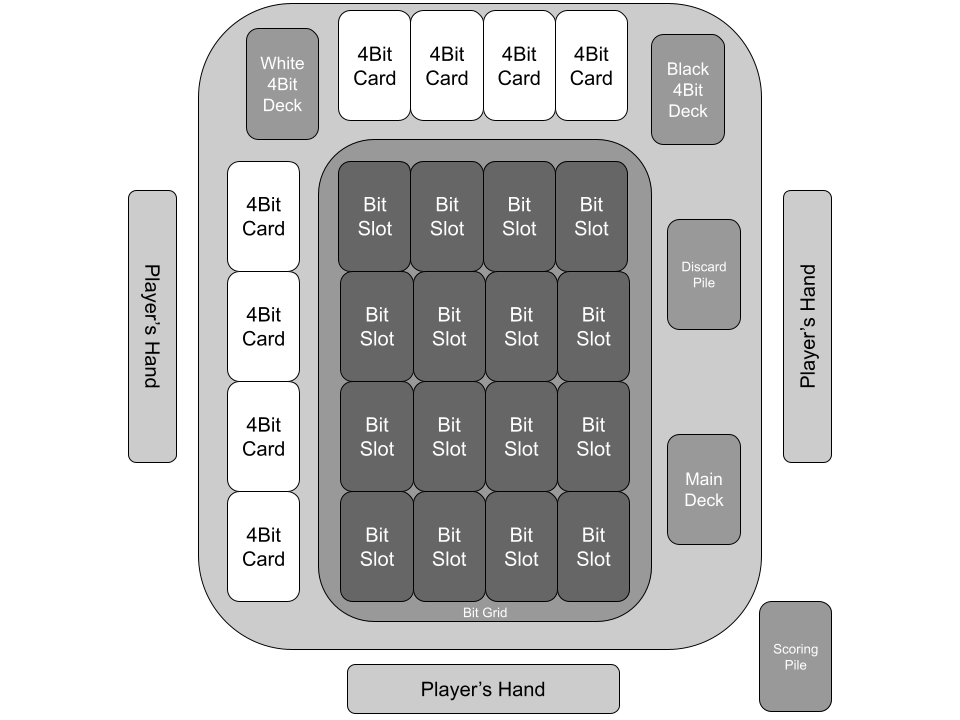

The first Player who reaches 4 Bit Points wins! Bit Points are gained through the completion of 4Bit Cards sequences, as mentioned below.
Scoring:
When a Player completes a 4Bit Sequence:
scores 1 Bit Point,
then places the corresponding White 4Bit Card face down in front of them forming the Scoring Pile and
replaces it with a new one from the White 4Bit Cards Deck.
The player who completes the 4Bit sequences, indicated by a Black 4Bit Card they own, scores 2 Bit Points instead and places both Black and White 4Bit Cards face down on the Scoring Pile. As the game progresses, the completed White 4Bit Cards of each player should form the Scoring Pile in front of them.
Set Up:
To set up the game, follow these steps:
Shuffle the White 4Bit Cards deck and place it face up on the upper left corner of the 5x5 Bit Grid.
Draw the top 8 cards of the White 4Bit Cards Deck and place them face up completing the first row and the first column of the grid.
Then search the 4Bit Cards from the Black 4Bit Deck that corresponds with the 8 face up White 4Bit Cards and form a face down pile with them (Black 4Bit Deck will not be used again in the setup).
Afterward, shuffle the face-down Black 4Bit pile and deal 2 4Bit Black Cards to each player. These cards are the target numbers for each player and can only be visible to their owners.
Finally, shuffle Bit cards, Gate cards and Special Cards together, forming the Main Deck.
Deal 4 cards to each player clockwise from the Main Deck.
The player who has most recently viewed any type of turned on screen plays first.
At the start of the game the board should look like this:

In a Turn:
Each player, in their turn:
Draws a card from the Deck.
Then they can play up to 1 card of each Type (Bit, Special, Gate) in any order, unless a played card states otherwise.
If a player does not play any card in their turn (pass), they draw another card from the Deck just before they end their turn.
Eitherway, right after that, they pass their turn to the next player on the left (clockwise).
Example of a Turn:
Player A plays an “1 Bit Card” by placing it in an empty Bit Slot.
Then the Player A plays a “NOT Gate Card” to replace a “0 Bit Card” on the Bit Grid with another
“1 Bit Card” to fill a 4Bit Card row and score 1 Point, by flipping the 4Bit Card face down.
Finally, the Player A plays an “Encryption Special Card” that protects him from
other players’ Special Cards until the end of his next turn.
Cards Types:
Bit Cards:
The most basic cards in the game! With these cards a player can fill the empty Bit Slots in the Bit Grid in order to complete 4Bit Sequences.
Gate Card:
Gate cards represent small circuits that transform the played Bit Cards! With these cards a player can combine played Bit Cards (by discarding them) from the Bit Grid to play a new Bit Card from their hand in any empty Bit Slot of the Bit Grid. The valid transformations a Gate Card allows, are stated on the left side of it. These Cards are discarded after their use.
Special Cards:
Special cards have unique abilities and can be a game changer! Playing one of these cards means that the player who played it must do exactly what the card text says and then discard it.
4Bit Cards:
These cards are the target cards of the Bit Grid. There are 2 types of 4Bit Cards, Black 4Bit Cards and White 4Bit Cards. White 4Bit Cards indicate the 4Bit Sequences that Players have to form in order to score Bit Points. Black 4Bit Cards are secretly dealt to each Player and indicate the secret target they have to complete, in order to score more Bit Points.
FAQs:
What happens when a deck runs out of cards?
Nothing! Shuffle the discarded cards and continue.
Up to how many cards can a player have in their hand?
There is no hand limit.
Does a Player know the Black 4Bit Card(s) of the other Players?
No! Those cards are known only to their owner, who secretly tries to complete the corresponding 4Bit Sequence.
What happens if a Player completes a 2 4Bit sequence in one turn?
Each completed 4Bit Sequence gives a Bit Point to the Player who owns the corresponding Black 4Bit Card. So it is possible for a Player to score 2 Bit Points in one turn or to score for another Player.
Can a Player interact with rows and columns that have already been used to complete a 4Bit Card sequence?
Yes, any Player can interact with any played card.